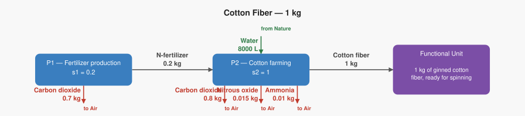

PLAN: Life Cycle Assessment MCP
What this is
A fully open-source, freely deployable MCP (Model Context Protocol) server that exposes life cycle assessment as AI-callable tools — the same way the Dolt MCP exposes a version-controlled SQL database to any AI assistant.
Once deployed, any AI — Claude.ai, ChatGPT, Copilot, Gemini — can run a full LCA in a single conversation turn, get back numbers and supply chain diagrams, and explain the results to a student in plain English. No software to install. No files to open. No code to write.
How the Dolt MCP works — and what we’re mirroring
The Dolt MCP gives AI assistants a small set of focused tools for talking to a database:
| Dolt MCP Tool | What it does |
|---|---|
list_tables |
See what data is available in the database |
describe_table |
Understand the shape of a specific table |
list_views |
See pre-built views (named queries) |
read_query |
Ask a question using SQL — get rows back |
write_query |
Insert or update rows |
A student can open Claude.ai, ask “What are the top 5 products by revenue this quarter?” and Claude calls read_query behind the scenes, gets the rows, and answers in plain English. The student never writes SQL.
The Life Cycle Assessment MCP does the same thing for environmental analysis.
Life Cycle Assessment MCP Tools
| LCA MCP Tool | Dolt analogy | What it does |
|---|---|---|
list_impact_methods |
list_tables |
See all 45 scoring methods available (TRACI 2.2, ReCiPe 2016, EF 3.1 …) |
check_server |
connect / ping | Confirm the calculation engine is running |
run_lca |
read_query |
Pass a supply chain description, get back full results + diagrams |
get_lca_svg |
describe_table |
Get a visual supply chain map without running the full calculation |
What this enables for students
Example 1 — Paper cup vs PS foam cup
A student in a retail sustainability course asks Claude.ai:
“Which is better for the environment — a paper cup or a polystyrene foam cup? I want to see the actual numbers.”
Claude calls run_lca twice — once for each cup — passing the supply chain descriptions (product graphs) on behalf of the student. It gets back:
| Impact | Paper cup | PS foam cup |
|---|---|---|
| Global warming | 0.011 kg CO₂ eq | 0.005 kg CO₂ eq |
| Freshwater withdrawn | 14.3 L | 0.7 L |
And two supply chain diagrams like this one — generated automatically and returned as SVG images Claude can display inline:

Claude then explains: “The PS foam cup produces about half the greenhouse gas emissions of the paper cup — but it relies on non-renewable petroleum and doesn’t biodegrade. The paper cup uses 20× more water because pulping and papermaking are extremely water-intensive. Which trade-off matters more depends on what your company is trying to prioritise.”
The student never saw the product graph. They just asked a question.
Example 2 — Wool yarn vs cotton fiber
A student comparing textile materials asks:
“I’m sourcing yarn for a new product line. Is wool or cotton better for climate impact?”
Claude calls run_lca for each, gets back TRACI 2.2 results, and can show:
Wool yarn (1 kg): - Global warming: 13.55 kg CO₂ eq — dominated by methane from sheep - Water: 30 L
Cotton fiber (1 kg): - Global warming: 1.50 kg CO₂ eq - Water: 8,000 L — cotton farming is one of the most water-intensive crops
Claude explains: “Wool has nearly 9× the climate impact of cotton — because sheep emit large amounts of methane, a greenhouse gas 25× more potent than CO₂. But cotton requires thousands of litres of water per kilogram. If your brand is in a water-stressed region, cotton may be the harder choice despite its lower carbon number.”
Supply chain diagrams are returned for both and shown side by side.
Example 3 — Modify and re-run in the same conversation
A student asks: “What if the wool farm switched to renewable electricity for processing?”
Claude edits the product graph in memory, calls run_lca again with the updated values, and compares the before and after — all in one conversation turn. No files to open. No re-running scripts.
Example 4 — Explore impact methods
A student asks: “What scoring methods are available? Can we look at this using ReCiPe instead of TRACI?”
Claude calls list_impact_methods, shows the student the 45 available methods, and re-runs the same analysis with ReCiPe 2016 — again, all in the same conversation.
What the AI does behind the scenes
When a student asks a sustainability question, the AI:
- Looks up the relevant product graph (or writes one from the student’s description)
- Calls
run_lca(product_graph="...", method="TRACI 2.2") - Receives LCI totals, LCIA scores, a scaling vector, and two SVG diagrams
- Displays the diagrams inline and explains the numbers in plain English
The student sees only the explanation and the diagrams. The product graph, the tool call, and the raw JSON never appear.
Stack
| Layer | Technology |
|---|---|
| MCP framework | fastmcp (Python) |
| HTTP/SSE transport | FastAPI + uvicorn |
| LCA calculation engine | gdt-server (GreenDelta, open-source Java) |
| Python LCA client | olca-ipc, olca-schema |
| Diagram generation | lca_svg.py (SVG via matplotlib) |
| Container | Docker |
| Deployment | Any cloud host (Render, Railway, Fly.io free tier) |
run_lca — what goes in and what comes back
@mcp.tool()
def run_lca(product_graph: str, server_url: str = "http://localhost:8080") -> dict:
"""
Run a full LCA from a product graph YAML string.
Returns LCI flows, LCIA impact scores, scaling vector, and SVG diagrams.
"""Returns:
{
"name": "Wool Yarn LCA",
"method": "TRACI 2.2",
"functional_unit": "1 kg wool yarn",
"lci": {
"Carbon dioxide": {"amount": 2.55, "unit": "kg"},
"Methane": {"amount": 0.44, "unit": "kg"},
"Water": {"amount": 30.0, "unit": "L"}
},
"lcia": {
"Global warming": {"score": 13.55, "unit": "kg CO2 eq"},
"Smog (Photochemical Oxidation Formation)": {"score": 0.006327, "unit": "kg O3 eq"}
},
"scaling_vector": {
"P1 — Sheep farming": 1.1,
"P2 — Wool yarn production": 1.0
},
"svg_scaled": "<svg>...</svg>",
"svg_structure": "<svg>...</svg>"
}Deployment tiers
Tier 1 — Free (anyone can use it)
The Docker image bundles the free lca_methods database — 45 LCIA methods (TRACI 2.2, ReCiPe 2016, EF 3.1, CML, ImpactWorld, and more). No license required.
docker run -p 9000:9000 calvinw/lca-mcp-server:latestOr point any MCP client at a publicly hosted instance:
https://lca.mcp.yourdomain.com/sseTier 2 — ecoinvent (licensed users)
Users with an ecoinvent license point the tools at their own gdt-server:
run_lca(product_graph="...", server_url="http://my-ecoinvent-server:8080")The MCP server itself stays free and license-clean.
Tier 3 — BAFU (future, free)
Same as Tier 1 with the Swiss BAFU background database, enabling real industrial background processes without a license.
File structure
mcp-lca/
├── lca_server.py ← FastMCP server, all @mcp.tool() definitions
├── sse_server.py ← FastAPI wrapper for SSE/HTTP transport
├── lca_engine.py ← LCA calculation logic
├── lca_svg_engine.py ← supply chain diagram generation
├── requirements.txt
├── Dockerfile
└── start.sh ← starts gdt-server, waits, then starts sse_server.pyBuild order
- Create
mcp-lca/withlca_server.py,sse_server.py,requirements.txt - Extract calculation logic into
lca_engine.py - Extract diagram logic into
lca_svg_engine.py - Test in stdio mode locally
- Register in
.skillshare/config.yamlas stdio MCP - Write
Dockerfileandstart.sh - Deploy to Render/Railway/Fly.io free tier
- Switch
.skillshare/config.yamlto SSE URL